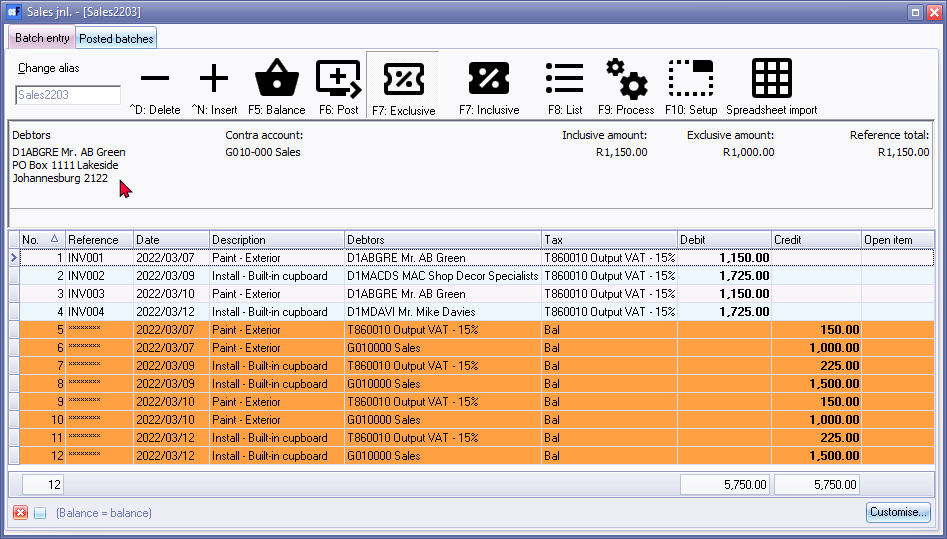

Balance batch
Before you may proceed to post a batch, you need to balance the batch.
|
|
This will not be necessary when your batch is in balance (i.e. where you have entered debit transactions and credit transactions of equal value) in a batch. An example for this is when you take-on opening balances from a trial balance, obtained from the accounting records of your previous accounting system. |

|
|
The Tax report (Reports → Tax) does not include the Sales journal. It only includes Sales documents (i.e. Invoices an Credit notes). Transactions on other Batch types may cause similar errors. The reason for this, is the Consolidate balancing option on the Standard tab - F10:Setup on the Options for this batch screen. When setting up the batch, an information message will be displayed. "Consolidating lines and using tax will mess up your tax report! Please make sure you do not use tax or do not consolidate lines!" . Click on the OK button and click on the F10:Setup icon and deselect (remove the tick) from the Consolidate balancing field on the Standard tab of the "Options for this batch" screen. Balance the batch again. |

To balance a Batch:
- Click on the F5:Balance icon.
|
|
Right-click on the selected batch (journal) on the Batch type selection screen, and select the Balance batch option on the context menu. |
|
|
You may click on the F9:Process icon. You then need to select the Balance batch from the list of batch processing options. |
- When this process is finished, the balancing entries will automatically be inserted directly below your last transaction entry. An example of the transactions entered in the Sales journal, is as follows:
 - Reference - Balancing entries are indicated by 8 asterisks ( ******** ) in the Reference Field.
- Date - The Date of the balancing entries will be the date of the last transaction, which you have entered.
|
|
If you have entered transactions with dates in more than one accounting period, balancing entries will be generated for each accounting period. |
- Description - Balancing entries for the description of the transactions, as entered in the batch, will be generated for each entry, excluding Tax (VAT/GST/Sales Tax) and also for the Tax (VAT/GST/Sales Tax) amounts.
|
|
In cases where the Consolidate balancing option on the Standard tab of the F10:Setup on the Batch entry screen is selected (ticked), the BALANCING ENTRY followed by the Batch name and the alias name are displayed in the Description field. Once again, make sure that No Tax (VAT/GST/Sales Tax) is applicable to all transactions in the batch. You may then over type these descriptions, as it is not very meaningful to an outside auditor or accountant. If you over type these, it will definitely make it easier to trace and reconcile transactions. |

Steps after balancing the batch
After the batch balances, you still need to do the following to finalise the batch:
- Click on the F8:List icon to print a list of the transactions in the batch.
|
|
It is a good idea to list the batch, and check the entries on the batch thoroughly. If there are any errors, you may edit the batch, before posting the batch. |
- Click on the F6:Post icon to post the batch. The transactions will automatically be posted (updated) to the ledger.
|
|
In this example, it would debit the individual accounts (i.e. Debtor accounts), credit the total to the contra account (i.e. sales account) and credit the VAT amount to the Output VAT account. |
|
|
You may also post batches in Update ledger (Batches tab) (Default ribbon), or from the Post batch option on the Batch type selection screen's context menu. |